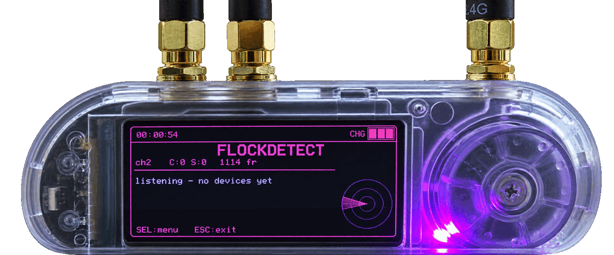
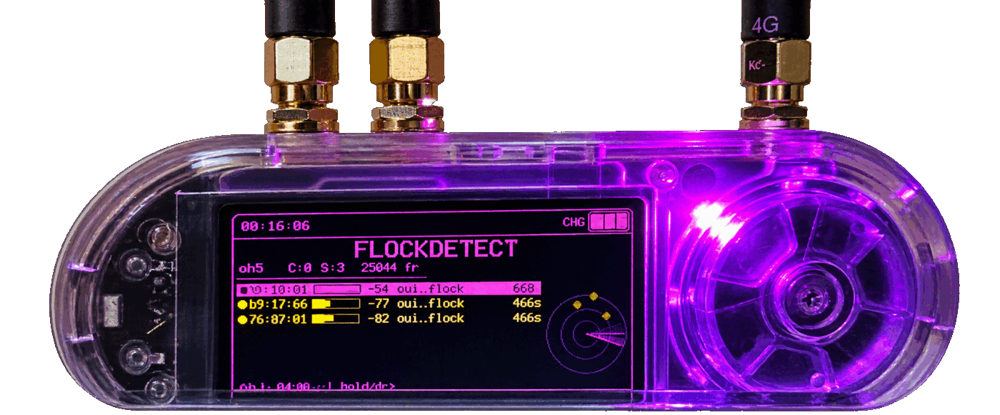
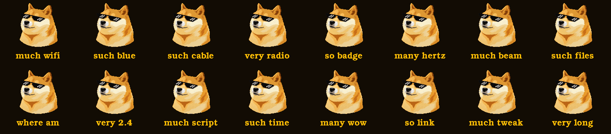

Plug the board in over USB-C and click. No esptool, no Python — the whole flash happens in the browser over Web Serial.
If the board isn't offered in the port picker, hold BOOT while tapping RESET, then click again. Coming from very different firmware? Tick Erase device in the install dialog.
Built 2026-08-14 · adds the on-screen build badge
Bruce-lilygo-t-embed-cc1101-v3.bin Full merged image — flash to offset0x0. Recommended.
FlockDetect-app-only-firmware-v3.bin
App partition only — for OTA / partial flash at the app offset.
SHA256SUMS.txtChecksums for the v3 images and the theme pack.
SEL → Diagnostics; SEL cycles pages, Up/Dn scrolls, ESC exits). Three views: a per-stage capture counter chain, the IE signatures actually computed from wildcard probes, and every source heard regardless of tier — plus an optional flockdiag_*.csv on SD.Detection has been validated in the field against known Flock Safety cameras cross-referenced with DeFlock. The diagnostic pages are there so results can be checked rather than taken on trust.
Every earlier build stays on GitHub Releases with its own checksums and release notes — v2 (diagnostics, 2026-08-13) and v1 (initial, 2026-08-12).
All releases on GitHub Merged and app-only images for every version, with sha256 sums.Browser flashing is offered for the current build only. To flash an older one, download its merged image and use esptool as shown below.

Shiba in thug-life shades, three-quarter pose. Doge gold on near-black, a breathing gold LED, and every menu icon is the dog —
much wifi, such files, where am. Purely
cosmetic; it changes the Bruce menu skin and touches no firmware behaviour.
doge folder on your SD card or LittleFS, then
Config → UI Theme → doge.json
Works on stock Bruce too — it uses the standard theme format, so it isn't tied to this build. Icons are sized for the T-Embed's 320x170 panel.
USB-C the board, then with esptool:
esptool.py --chip esp32s3 --baud 921600 write_flash 0x0 Bruce-lilygo-t-embed-cc1101-v3.binIf the board doesn't enter download mode automatically, hold BOOT while tapping RESET, then run the command. Erase first with esptool.py --chip esp32s3 erase_flash if you're coming from very different firmware.
Passively identifies Flock Safety ALPR gear and related surveillance devices over WiFi and BLE, with a tiered alert model:
CONFIRMED → alarm + LED SUSPICIOUS → visual INFO → list only
WiFi → FlockDetect): wildcard-probe IE-signature fingerprint, Flock-XXXXXX/test_flck SSID patterns, hidden-SSID flagging, and Flock / SoundThinking / camera-vendor OUI tables.Bluetooth → FlockDetect BLE): Raven acoustic-sensor service UUIDs (+ firmware estimate), Flock-family device names, and the XUNTONG manufacturer ID.Detection only — passive receive, no transmit. Signatures shift as vendors change hardware; treat SUSPICIOUS/INFO as leads to verify, not positive IDs.
This is strictly a scanning device. It passively listens for radio frames that nearby equipment already broadcasts. It does not transmit, jam, deauthenticate, associate with, log into or interfere with any device or network, and it captures no payload traffic.
Not affiliated with Flock Safety or any other manufacturer whose equipment it attempts to identify. "Flock Safety", "Raven", "SoundThinking" and all other names and marks are the property of their respective owners, used here only to describe what the tool looks for.
Not affiliated with the Bruce firmware project or its maintainers. This is an independent fork — please don't take FlockDetect problems to them. The same goes for the upstream detection projects credited below, whose work is ported here with attribution but who have no involvement in this build.
Use at your own risk. Detection is signature-based. It will produce false positives and false negatives, and signatures go stale as vendors change their equipment. Nothing it reports is a positive identification of anything. You are responsible for complying with the laws on radio monitoring and recording that apply where you are. Provided as-is, without warranty of any kind.